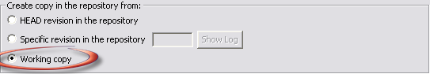

This function is initiated via the menu option.
You can use the Branch/Tag command for several different purposes:
This command launches the same single-step Copy (Branch /Tag) operation as described in the SVN Repository Explorer View. The only difference is the availability of the working copy as a source for the copy operation.

Selecting to create the branch or tag from your working copy enables you to save your work to a new repository location. This is likely to be useful if you started working on a change which you later decide be in a branch of its own. Another use is when you need to move really big changes between working copies (e.g. between development machines), and when moving a patch files becomes impractical.
The process of creating a new branch or tag does not change or redirect your working copy to the new target path. To work on the newly created branch or tag, you will need to switch to it.
Related Tasks
Maintaining branches with SVN
Configure Branches/Tags
Related Reference